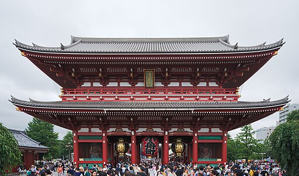
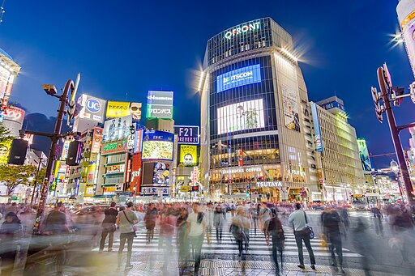
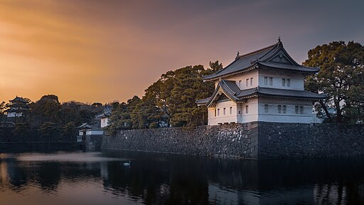
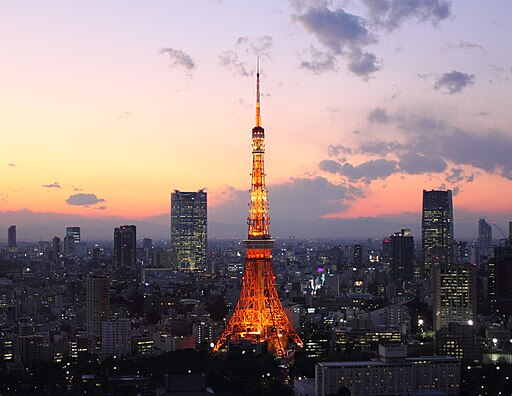
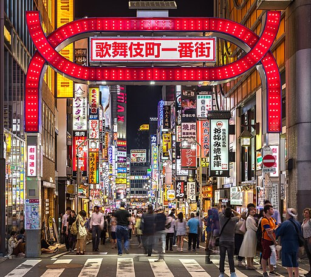
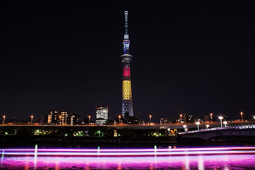
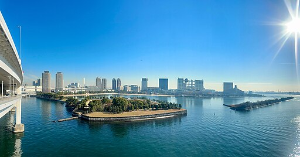

-

Barrio de Taitō
-
Distrito de Asakusa
- Templo Sensō-ji
- Recomendaciones de comida del youtuber Japatonic
-
Distrito de Ueno
-

Barrio de Shibuya
- El famoso cruce peatonal de Shibuya
- Estatua de Hachikō
- Centro Comercial Shibuya 109
- Parque de Yoyogi
- Santuario Meiji
-

Barrio de Chiyoda
- Palacio Imperial de Tokio
- Santuario Yasukuni
- Zona comercial de Akihabara
-

-

Barrio de Shinjuku
- Edificio del Gobierno Metropolitano de Tokio
-

-

Isla de Odaiba
- Rainbow Bridge
- Réplica de la Estatua de la Libertad